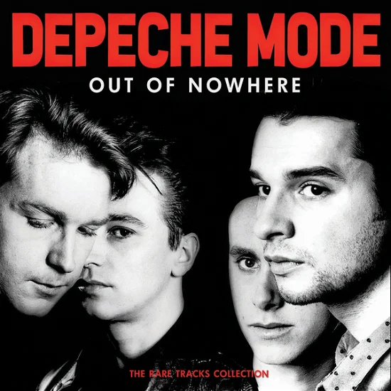

 Depeche Mode (francés: /depɛʃ mɔd/) es una banda británica de música electrónica formada en 1980 por Vince Clarke, Andrew Fletcher, Martin Gore y David Gahan. Después de su álbum debut Speak & Spell en 1981, Clarke dejó el grupo y fue sustituido por Alan Wilder, quien permaneció hasta 1995, tras lo cual Gahan, Gore y Fletcher continuaron como trío hasta el fallecimiento de éste en 2022, pese a lo cual Gahan y Gore permanecen como dueto. Según el documental Historia del rock de la BBC "son los padres del rock electrónico"; está considerado uno de los mejores exponentes del género, siendo importantes precursores del uso del sintetizador como instrumento y del sampler como recurso musical, destacando su uso prominente del E-mu Emulator así como de la realización de videos musicales. Ha vendido más de 120 millones de álbumes, sumando el total de ventas de sus discos en todo el mundo, incluyendo sencillos, convirtiéndose en el más exitoso grupo de música electrónica en la historia. También fue elegido entre los 50 mejores grupos de música de todos los tiempos y uno de los 10 más influyentes de la música contemporánea La revista Q, la incluyó dentro de las "50 bandas que cambiaron el mundo" y de acuerdo con el Sunday Telegraph es «uno de los más grandes grupos de pop británico de todos los tiempos»